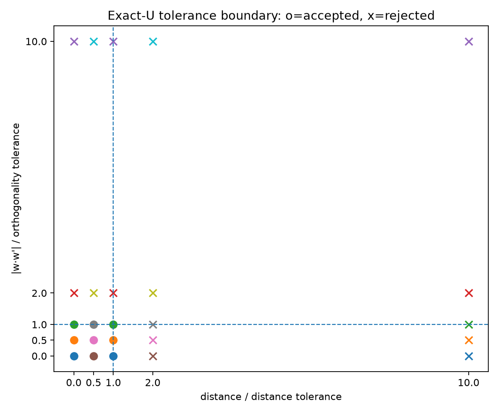
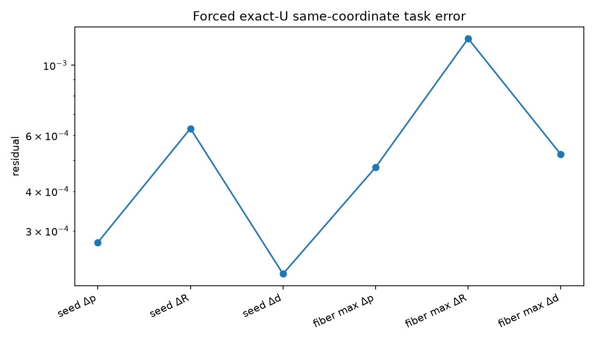

Exact tolerances: distance ≤ 1e-12 m, |w·w'| ≤ 1e-09, and ||w×w'|| ≥ 1e-08.
| Source | Axis aggregation | Closed mechanism | Overall | False-U max Δp [m] |
|---|---|---|---|---|
near_aligned_u_pair_4r | REJECTED | UNRESOLVED | REJECTED | 4.759e-04 |
exact_u_pair_4r | EXACT_GLOBAL | UNRESOLVED | UNRESOLVED | — |
generic_4r | REJECTED | UNRESOLVED | REJECTED | — |
Boundary suite: 9/25 accepted. Values at or below both exact thresholds should be accepted, subject to floating-point tolerance; values above either threshold should be rejected.


The forced surrogate is compared at the source joint coordinates. An independently solved surrogate fixed-position component remains a later approximation study.